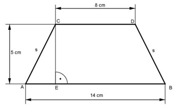

Pythagoras Aufgabe 19 Berechnen Sie die Länge der Seite s des gleich- schenkligen Trapezes in cm.  14 cm - 8 cm AE = -------------- = 3 cm 2 Satz von Pythagoras im Dreieck AEC: s2 = AE2 + EC2 s2 = 32 cm2 + 52 cm2 = 34 cm2 |√ s = 34cm2 = 5,8 cm
Pythagoras Aufgabe 19 Berechnen Sie die Länge der Seite s des gleich- schenkligen Trapezes in cm.
